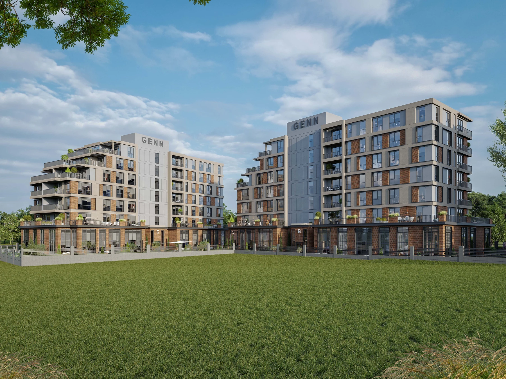

PROJECT OVERVIEW
GENN Halkalı
A residential development in Halkalı with 131 homes across three blocks, including different apartment and duplex concepts.
Home options1+1 to 3+1
Project scale131 homes across three blocks
Photo gallery

Each gallery image is labelled by type. Architectural illustrations do not show the current construction condition; archive photographs are not a current status report.
EVERYDAY LIVING
Living spaces
The project presents landscaped areas and a range of apartment configurations. Request the exact unit specification for loft or duplex options.
LOCATION AND ACCESS
Halkalı · Küçükçekmece · İstanbul
Located in Halkalı, Küçükçekmece, with access to the Marmaray corridor.
YOUR NEXT STEP
Choose your home
Request the current apartment selection, price and payment options. Compare the exact unit, view and included services before arranging your purchase.